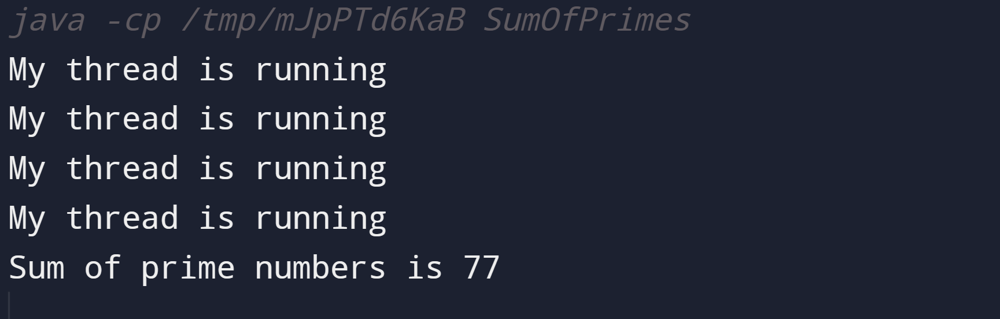

MULTITHREADING
1. Write a Java program to create a basic Java thread that prints "Hello, World!" when executed.
Input
class sampleThread extends Thread{
public void run(){
System.out.println("hello world");
}
}
public class Multithreading_1{
public static void main(String[] args) {
sampleThread foo = new sampleThread();
foo.run();
}
}
Output

2. Write a Java program that creates two threads to find and print even and odd numbers from 1 to 20.
Input
output
3. Write a Java program that sorts an array of integers using multiple threads.
Input
/* Write a Java Program that sorts an array of integers using multiple threads. */
import java.util.Arrays;
class ParallelMergeSort {
private final int[] array;
private ParallelMergeSort(int[] array) {
this.array = array;
}
private void merge(int low, int mid, int high) {
int[] left = Arrays.copyOfRange(array, low, mid + 1);
int[] right = Arrays.copyOfRange(array, mid + 1, high + 1);
int i = 0, j = 0, k = low;
while (i < left.length && j < right.length) {
if (left[i] <= right[j]) {
array[k++] = left[i++];
} else {
array[k++] = right[j++];
}
}
while (i < left.length) {
array[k++] = left[i++];
}
while (j < right.length) {
array[k++] = right[j++];
}
}
private void mergeSort(int low, int high) {
if (low < high) {
int mid = (low + high) / 2;
Thread leftThread = new Thread(() -> mergeSort(low, mid));
Thread rightThread = new Thread(() -> mergeSort(mid + 1, high));
leftThread.start();
rightThread.start();
try {
leftThread.join();
rightThread.join();
} catch (InterruptedException e) {
e.printStackTrace();
}
merge(low, mid, high);
}
}
private static void parallelMergeSort(int[] array) {
ParallelMergeSort sorter = new ParallelMergeSort(array);
sorter.mergeSort(0, array.length - 1);
}
public static void main(String[] args) {
int[] arr = {12, 4, 7, 3, 9, 5, 2, 1, 6, 11, 8, 10};
System.out.println("Array before sorting: " + Arrays.toString(arr));
parallelMergeSort(arr);
System.out.println("Array after sorting: " + Arrays.toString(arr));
}
}
output

4. Write a Java program that performs matrix multiplication using multiple threads.
Input
import java.util.concurrent.ExecutorService;
import java.util.concurrent.Executors;
import java.util.concurrent.TimeUnit;
public class MatrixMultiplication {
private static final int MATRIX_SIZE = 3;
private static final int NUM_THREADS = 3;
private static int[][] resultMatrix = new int[MATRIX_SIZE][MATRIX_SIZE];
private static int[][] matrixA = new int[MATRIX_SIZE][MATRIX_SIZE];
private static int[][] matrixB = new int[MATRIX_SIZE][MATRIX_SIZE];
public static void main(String[] args) {
initializeMatrix(matrixA);
initializeMatrix(matrixB);
System.out.println("Matrix A:");
printMatrix(matrixA);
System.out.println("\nMatrix B:");
printMatrix(matrixB);
ExecutorService executor = Executors.newFixedThreadPool(NUM_THREADS);
for (int i = 0; i < MATRIX_SIZE; i++) {
executor.execute(new MatrixMultiplier(i));
}
executor.shutdown();
try {
executor.awaitTermination(Long.MAX_VALUE, TimeUnit.NANOSECONDS);
} catch (InterruptedException e) {
e.printStackTrace();
}
System.out.println("\nResult Matrix:");
printMatrix(resultMatrix);
}
private static void initializeMatrix(int[][] matrix) {
for (int i = 0; i < MATRIX_SIZE; i++) {
for (int j = 0; j < MATRIX_SIZE; j++) {
matrix[i][j] = (int) (Math.random() * 10);
}
}
}
private static void printMatrix(int[][] matrix) {
for (int i = 0; i < MATRIX_SIZE; i++) {
for (int j = 0; j < MATRIX_SIZE; j++) {
System.out.print(matrix[i][j] + " ");
}
System.out.println();
}
}
private static class MatrixMultiplier implements Runnable {
private final int row;
public MatrixMultiplier(int row) {
this.row = row;
}
@Override
public void run() {
for (int col = 0; col < MATRIX_SIZE; col++) {
for (int k = 0; k < MATRIX_SIZE; k++) {
resultMatrix[row][col] += matrixA[row][k] * matrixB[k][col];
}
}
}
}
}
Output

5. Write a Java program that calculates the sum of all prime numbers up to a given limit using multiple threads..
Input
// Calculate sum of prime numbers up to a given limit using multiple threads
class MyThread extends Thread {
private int start, end;
private int sum = 0;
MyThread(int start, int end) {
this.start = start;
this.end = end;
}
public void run() {
System.out.println("My thread is running");
for (int i = start; i <= end; i++) {
if (isPrime(i))
sum += i;
}
}
boolean isPrime(int n) {
if (n == 0 || n == 1)
return false;
for (int i = 2; i <= Math.sqrt(n); ++i) {
if (n % i == 0)
return false;
}
return true;
}
public int getSum() {
return sum;
}
}
class SumOfPrimes {
MyThread[] myThreads;
private int sum = 0;
private int limit = 20;
private static int threadCount = 4;
// Constructor to initialize the array of threads
public SumOfPrimes(int n) throws InterruptedException {
this.myThreads = new MyThread[n];
for (int i = 0; i < n; i++) {
int start = ((limit * i) / n);
int end = (i == n-1) ? limit : ((limit * (i+1))/n) - 1;
myThreads[i] = new MyThread(start, end);
}
}
// Function to start all threads
public void startAll() throws InterruptedException {
for (int i = 0; i < myThreads.length; i++) {
myThreads[i].start();
myThreads[i].join();
}
}
public void getSum() {
for (int i = 0; i < myThreads.length; i++) {
this.sum += myThreads[i].getSum();
}
}
public static void main(String[] args) {
try {
SumOfPrimes mt = new SumOfPrimes(threadCount);
mt.startAll();
mt.getSum();
System.out.println("Sum of prime numbers is " + mt.sum);
} catch (InterruptedException e) {
System.err.print("Error: " + e);
}
}
}
Output

6. Write a Java program to implement a concurrent web crawler that crawls multiple websites simultaneously using threads.
Input
output
7. Write a Java program that creates a bank account with concurrent deposits and withdrawals using threads.
Input
output
8. Create the program to create multiple threads by using Runnbale interface
Input
class prog8 {
/*
* Topic = Multithread
* prog.no 8 Create the program to create multiple threads by using Runnbale
* interface
*/
public static void main(String[] args) throws java.lang.ClassNotFoundException {
Runnable r1 = new MyRun("This is Thread 1");
Runnable r2 = new MyRun("This isThread 2");
Runnable r3 = new MyRun("This isThread 3");
Thread t1 = new Thread(r1);
Thread t2 = new Thread(r2);
Thread t3 = new Thread(r3);
t1.start();
t2.start();
t3.start();
}
@Override
public String toString() {
return "prog1 []";
}
}
class MyRun implements Runnable {
private String tn;
public MyRun(String name) {
this.tn = name;
}
@Override
public void run() {
for (int i = 1; i <= 5; i++) {
System.out.println(tn + " - Count is start: " + i);
try {
Thread.sleep(1000);
} catch (InterruptedException e) {
Thread.currentThread().interrupt();
}
}
System.out.println(tn + " now running has finished.");
}
}
output

9. Create the program to create multiple threads by using Thread class
Input
output
10. Create the program to create multiple threads, set its name and its priority.
Input
class MyThread extends Thread {
public MyThread(String name, int priority) {
super(name);
setPriority(priority);
}
public void run() {
System.out.println("Thread: " + getName() + ", Priority: " + getPriority() + " is running.");
}
}
public class ThreadExample {
public static void main(String[] args) {
MyThread thread1 = new MyThread("Thread1", Thread.MAX_PRIORITY);
MyThread thread2 = new MyThread("Thread2", Thread.NORM_PRIORITY);
MyThread thread3 = new MyThread("Thread3", Thread.MIN_PRIORITY);
thread1.start();
thread2.start();
thread3.start();
}
}
output
.png )
11. Create the program to create multiple threads, show an example of synchronization keyword.
Input
output
12. Create the program to create multiple threads, show an example of notify, notifyall, wait, resume, sleep methods.
Input
class ShareResources {
/*Topic :Multithreds
prog.no 12. Create the program to create multiple threads, show an example of notify, notifyall, wait, resume, sleep methods.
*/
private int value;
private boolean isP;
public synchronized void P(int newV) {
while (isP) {
try {
wait();
} catch (InterruptedException e) {
Thread.currentThread().interrupt();
}
}
value = newV;
System.out.println("Your thread is processing: " + value);
isP = true;
notify();
}
public synchronized void C(int newV) {
while (!isP) { // Change isP to !isP
try {
wait();
} catch (InterruptedException e) {
Thread.currentThread().interrupt();
}
}
value = newV;
System.out.println("Your thread is processing: " + value);
isP = false;
notify();
}
}
class P implements Runnable {
private ShareResources sR;
public P(ShareResources sR) {
this.sR = sR;
}
@Override
public void run() {
for (int i = 1; i <= 5; i++) {
sR.P(i);
try {
Thread.sleep(1000);
} catch (InterruptedException e) {
Thread.currentThread().interrupt();
}
}
}
}
class C implements Runnable {
private ShareResources sR;
public C(ShareResources sR) {
this.sR = sR;
}
@Override
public void run() {
for (int i = 1; i <= 5; i++) {
sR.C(i); // Change sR.P(i) to sR.C(i)
try {
Thread.sleep(1000);
} catch (InterruptedException e) {
Thread.currentThread().interrupt();
}
}
}
}
public class Multithread7104prog12 {
public static void main(String[] args) {
ShareResources sR = new ShareResources();
Thread proc = new Thread(new P(sR));
Thread cons = new Thread(new C(sR));
proc.start();
cons.start();
}
}
output
13. Create the program to create multiple threads, show an example of join and yield methods.
Input
output